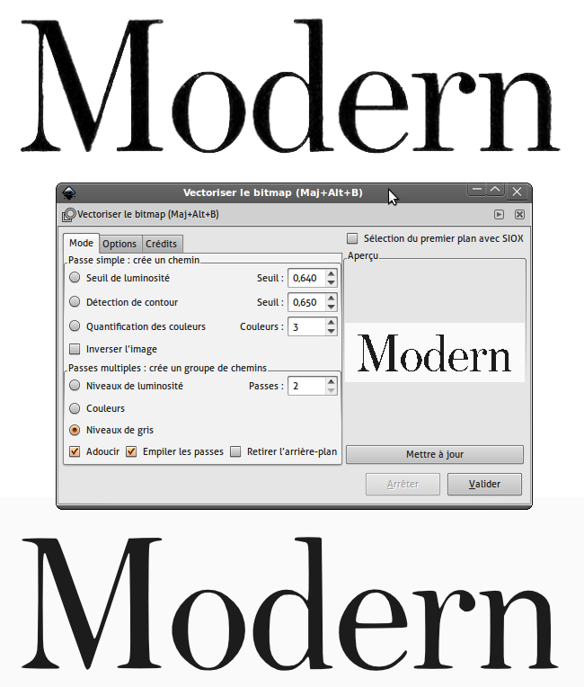
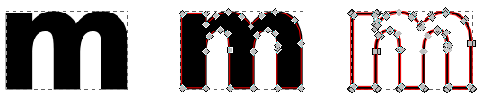
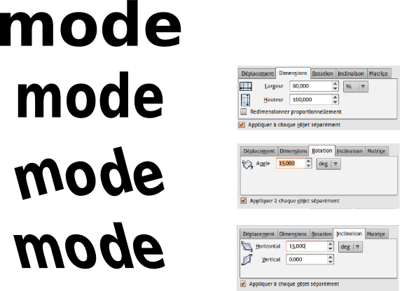

Vectorisation de texte dans Inkscape
Vectoriser un texte scanné dans Inkscape
La vectorisation du texte sous forme d'image dans Inkscape fonctionnera sur le même principe que dans Glyphtracer. Elle comportera des avantages et des inconvénients qu'il faudra évaluer selon vos besoins et le flux de production que vous adoptez :
Les avantages sont :
- Vectorisation de l'ensemble du texte.
- Possibilité de retoucher à la géométrie des glyphes avant de les exporter.
- Permettre la génération de variantes.
- Permettre la définition de crénage* de base
Les inconvénients sont :
- L'association dessin-glyphe est un peu moins automatisée.
- Il n'y a pas d'enregistrement au format FontForge.
La vectorisation dans Inskcape est une étape assez simple avec quelques options dans lesquelles il faudra naviguer en fonction de la qualité de l'image source et le résultat souhaitée. Dans l'exemple ci-dessous, un titre issu d'un document scanné avec une résolution suffisante a été importé dans Inkscape (Fichier > Importer). La fenêtre de vectorisation peut-être affichée par le menu Chemin > Vectoriser le bitmap. Dans ce cas, comme dans de nombreux autres cas, une détection en Niveaux de gris et deux passes (sous entendu analyse en deux couleurs soit fond "blanc" et lettres "noires") a été choisie. Le résultat s'affiche superposé à l'image importée (nous avons ici mis le résultat décalé sous la fenêtre).
Comment cela se passe dans Inkscape ?

Il ne reste alors plus qu'à retravailler le résultat vectorisé. Nous avons à l'heure actuelle deux formes vectorielles : une pour chaque couleur, le fond et les lettres. Il suffit de dégrouper (Objet >Dégrouper). Il est alors possible de sélectionner le fond et le supprimer. Les lettres sont encore assemblées en une seule forme qu'il va être possible de séparer en utilisant (Chemin >Séparer).
Chaque forme géométrique composant le caractère est alors régénérée. Les contre-poinçons* et boucle en paient le prix et se voient remplis. Il va donc falloir les évider à nouveau. Pour cela sélectionner le contour d'une lettre et son "intérieur" et utiliser Chemin > Différence.
Enfin, l'utilisation de l'outil Nœud permettra la modification de la forme des lettres si besoin pour les rendre plus conformes. Téléchargez la version SVG de ce texte vectorisé à l'adresse http://fr.flossmanuals.net//
{kind=link}
Vectorisation de texte écrit dans Inkscape
Pour commencer votre travail, il est possible de partir d'une fonte existante que vous souhaiterez modifier en produisant une simple variation stylistique. Dans ce cas, Il sera possible de vectoriser le texte écrit avant ou après avoir effectué les modifications avant d'importer les contours dans FontForge ou de créer une police SVG.
Vectorisation du chemin de texte
La vectorisation du chemin de texte consiste simplement à transformer un caractère écrit à l'aide de l'outil texte en forme géométrie linéaire Bézier de manière à pouvoir en adapter la forme librement. Imaginons que nous souhaitions créer une forme de lettre basée sur Fengardo dont tous les caractères sont d'abord avec une graisse moyenne (Fengardo n'est livrée qu'avec du black).
- Dans Inkscape et si possible avec le modèle de document fontforge_glyph, en prévision d'orientation future, prendre l'outil Texte, puis écrire les lettres nécessaires à la future fonte, par exemple prenons de a à z par facilité et cela dans la police Fengardo-regular. Agrandissez le texte pour que la lettre soit à la bonne taille dans la page.
- Prenez ensuite l'outil Noeud (touche [F2]) et cliquez sur l'icône [Convertir les objets sélectionnés en chemin] [Ctrl]+[Maj]+[C]. Cette étape constitue la vectorisation du texte proprement dite. En cliquant sur une lettre avec l'outil Noeud, vous verrez apparaître les points qui composent la géométrie de la lettre.
- En l'état, toutes les lettres sont encore associées en un ensemble mais vous remarquerez que l'outil Texte n'agit plus dessus. Pour pouvoir adapter la géométrie des lettres, il va falloir les rendre indépendantes. Pour cela, utilisez Objet > Dégrouper [Ctrl]+[Maj]+[G].
- Pour épaissir légèrement les lettres, utilisez Chemin > Dilater. Répétez l'opération si besoin.
Vous pourrez alors utiliser cette nouvelle forme dans une fonte SVG. Pour pouvoir fournir un modèle de fonte correcte à FontForge, il faudra correctement centrer les lettres dans la page. Pour cela, Affichez la fenêtre Aligner et Distribuer ... (menu Objet) puis choisissez l'option Relativement à la page puis cliquez sur le bouton Centrer selon un axe vertical (troisième bouton de la première ligne). Il suffira de prendre les formes une à une et de les associer en tant que courbes de glyphe au caractère. Pour cela, reportez-vous à la section sur les SVG fonts dans Inkscape.
Pour créer des variations, cela va être très facile. Nous allons voir ici quelques solutions.
Vectorisation du contour de texte
Avec Inkscape, il sera très facile de créer des fontes au fûts évidés.
- Dans Inkscape et si possible avec le modèle de document fontforge_glyph, en prévision d'orientation future, prendre l'outil Texte, puis écrire les lettres nécessaires à la future fontes, par exemple prenons de a à z par facilité et cela dans la police Fengardo-regular. Agrandissez le texte pour que la lettre soit à la bonne taille dans la page;
- Affichez la fenêtre Objet > Remplissage et contour pour avoir accès à toutes les propriétés qui nous seront nécessaires;
- Dans l'onglet Fond, cliquez sur le bouton en forme de croix en haut à gauche, pour supprimer la couleur du texte;
- Dans l'onglet Contour, cliquez sur le bouton suivant Aplat, qui va ajouter une couleur au contour;
- dans l'onglet Style de contour, changez l'épaisseur du contour jusqu'à trouver un réglage qui vous plaise;
- Utilisez le menu Chemin > Contour en chemin [Ctrl]+[Alt]+[C]. Cette étape effectue la vectorisation des contours du texte seuls.
- Comme dans l'exemple précédent dégroupez avec Objet > Dégrouper [Ctrl]+[Maj]+[G] puis alignez les lettres sur la page.

La différence avec la vectorisation du chemin n'est pas toujours très clair. Dans l'exemple, la le m du milieu est une vectorisation de chemin et celui de droite une vectorisation de contour.
Créer des variantes rapidement (condensé, oblique, tourné...)
Même si cela n'est pas optimal en terme de création typographique, les outils de transformation d'Inkscape vont permettre de modifier rapidement l'aspect des lettres pour créer des variantes un peu brutes mais sans perte de temps. Toutes les recettes que nous montrons ici s'appliquent après l'étape de dégroupage pour assurer que la transformation soit homogène sur chaque forme. Affichez la fenêtre Objet > Transformer et cochez la case Appliquer à chaque objet séparément.
Condensé
Le condensé est une forme d'étroitisation d'un glyphe. En général il s'accompagne d'une réduction de la chasse et de l'approche. Il est donc possible d'utiliser un format de document moins large mais il faudra de toutes façons affiner le résultat dans FontForge. Pour condenser les lettres utilisez simplement l'onglet [Dimensions] et réduisez la largeur, par exemple à 80%.
Tourné
Nous donnons ici cette information à titre d'exemple car elle sera d'une maigre utilité pour des fontes en raison de la perte de lisibilité. Dans l'onglet [Rotation], notez aussi une valeur : une valeur positive fait une rotation anti-horaire (dans le sens inverse des aiguilles d'une montre).
Oblique
Le penché va permettre de simuler un oblique. L'onglet [Inclinaison] va permettre d'effectuer cette opération. L'oblique sera défini par l'utilisation de l'inclinaison horizontale.
